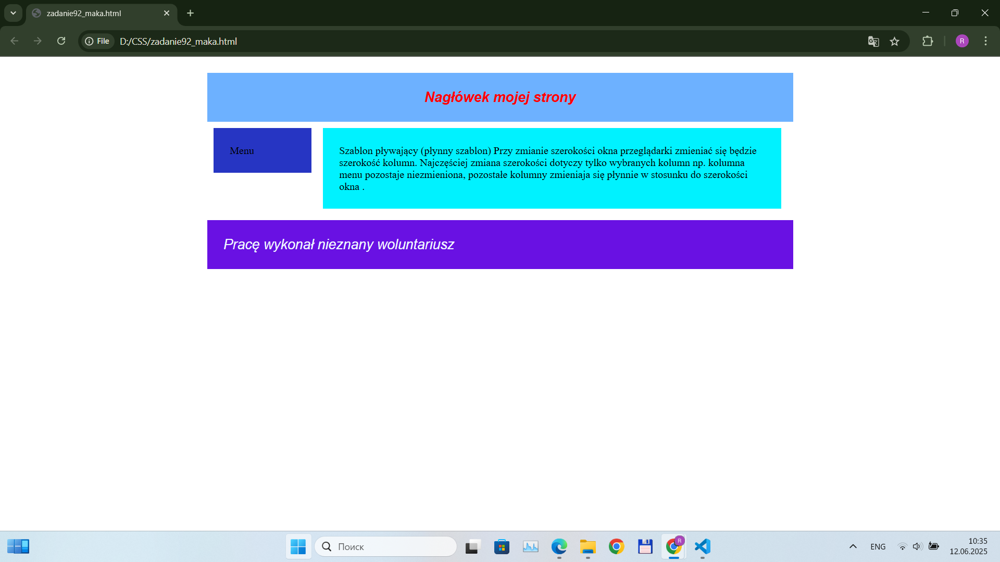
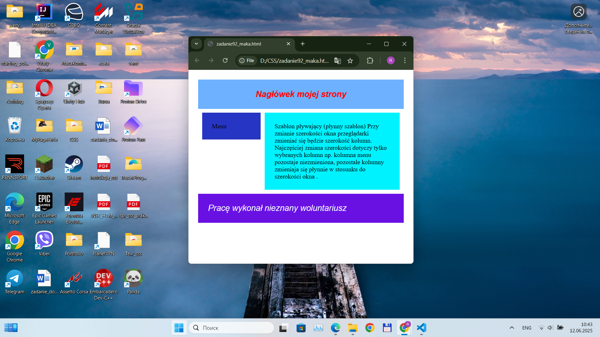

Menu
Szablon pływający (płynny szablon) Przy zmianie szerokości okna przeglądarki zmieniać się będzie szerokość kolumn. Najczęściej zmiana szerokości dotyczy tylko wybranych kolumn np. kolumna menu pozostaje niezmieniona, pozostałe kolumny zmieniaja się płynnie w stosunku do szerokości okna.
 